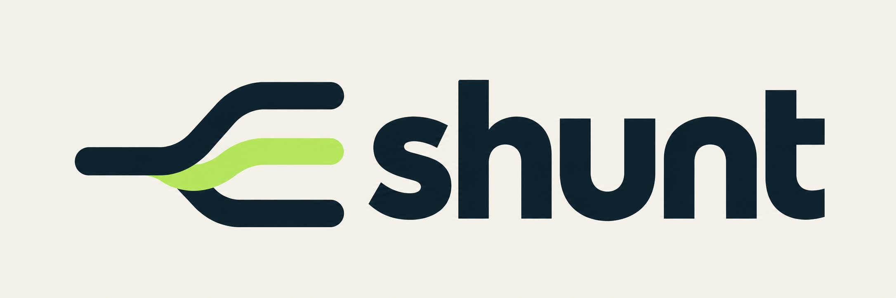

Held-out synthetic prompts
First trained adapter; frozen base scored 24 / 36 on the same set.
Method and limits ↗
LOCAL / RECOMMEND-ONLYMODEL ROUTING / RESEARCH PROTOTYPE
A compact local classifier scores coding-task complexity. Explicit rules account for risk, scope, ambiguity, and retries. Your application receives a tier recommendation and chooses what happens next.
No hidden handoff. Shunt does not call the execution models. The caller stays in control.
The recommendation can be inspected before the caller chooses an execution tier.
BOUNDED LOCAL MEASUREMENTS
Results describe synthetic scenarios and warm fixture calls. Downstream task quality and cost have not been measured.
First trained adapter; frozen base scored 24 / 36 on the same set.
Method and limits ↗1,000 calls on a bounded fixture; not end-to-end coding-agent latency.
Current acceptance ↗Probabilities are uncalibrated. Generalization, successful work, savings, and deployment readiness remain open questions.
SMALL MODEL / EXPLICIT POLICY
A small local adapter estimates which task tier fits the request.
Policy may raise a tier for risky scope, ambiguity, or a repeated lower-tier failure.
The calling application decides whether to follow, override, or ignore the recommendation.
MARKET POSITION / 2026-11-23
Rules-based routing and learned routers are real substitutes. Shunt earns a place only if it improves accepted-task outcomes or quality-adjusted cost over a fixed model and well-tuned rules.
Alternatives, adoption friction, next experiment ↗